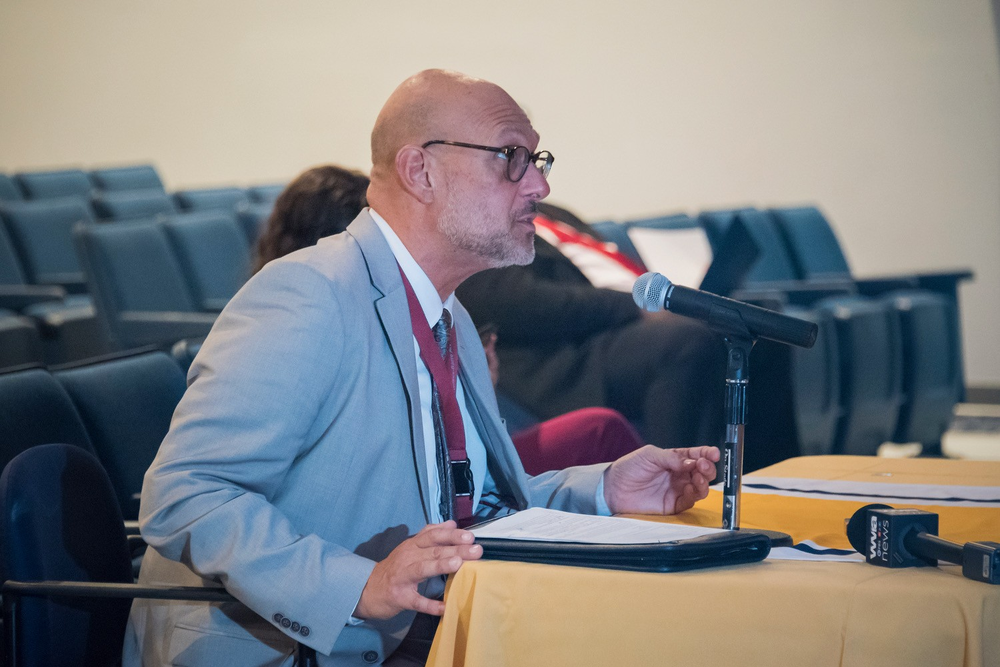
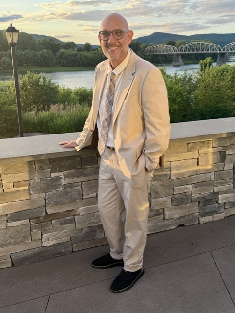
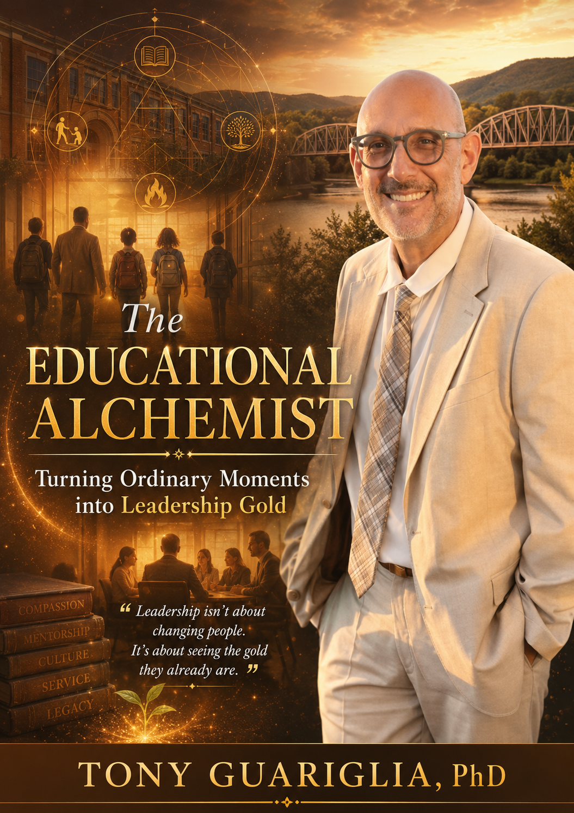
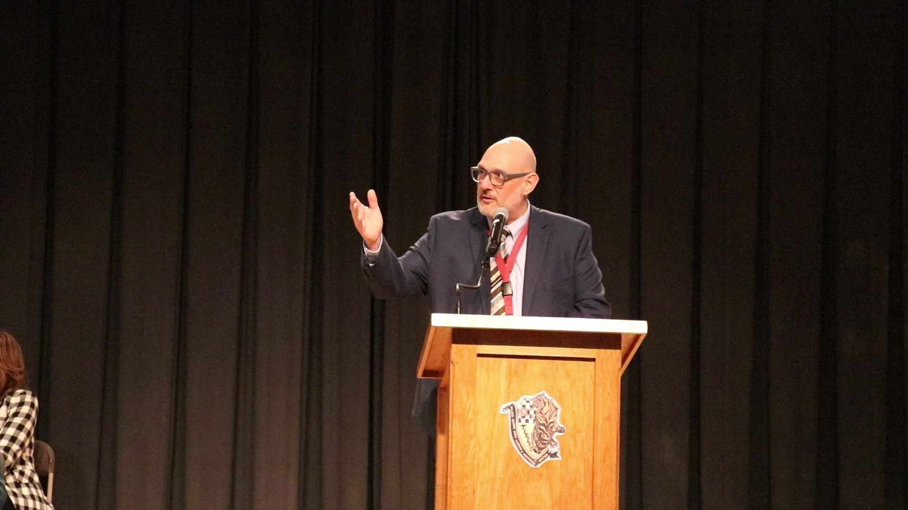
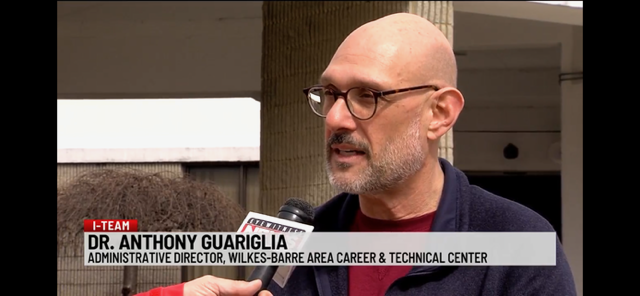
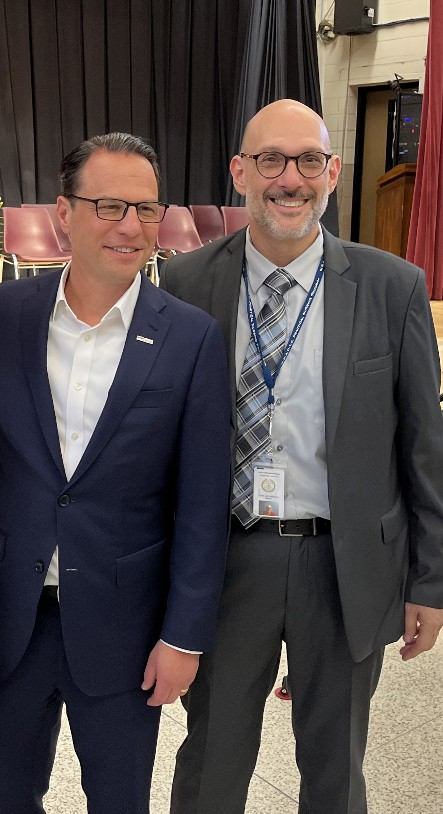
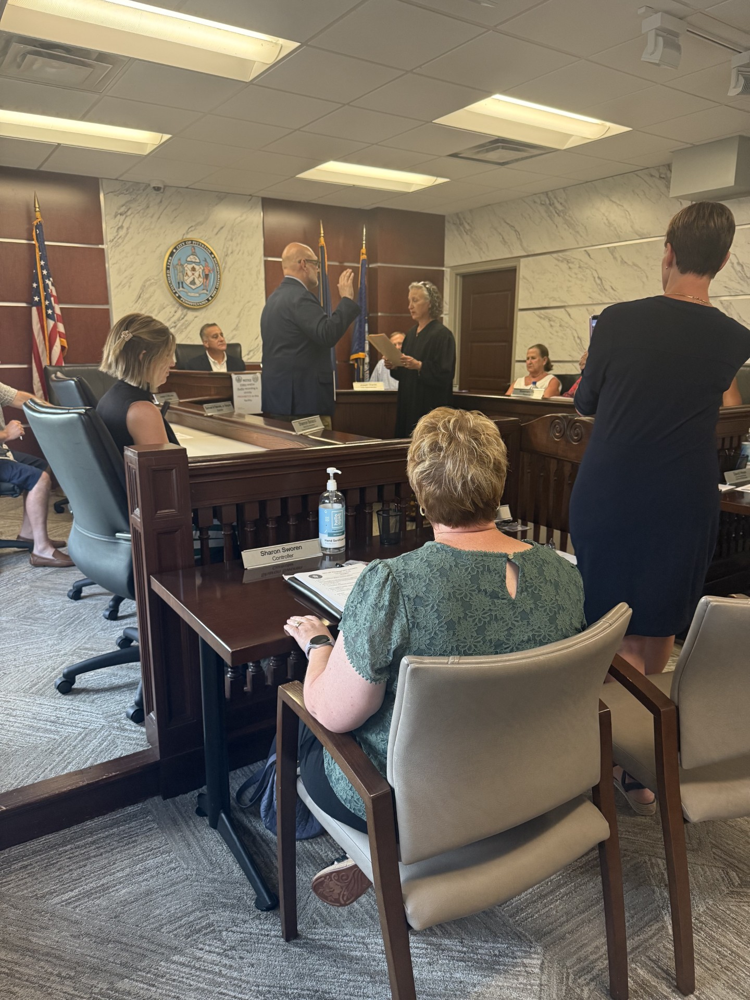
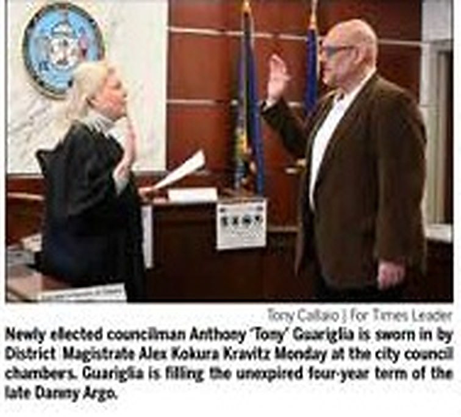
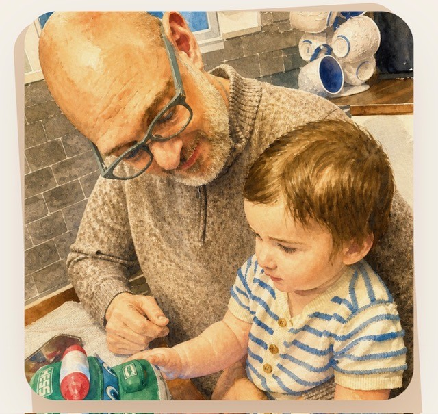
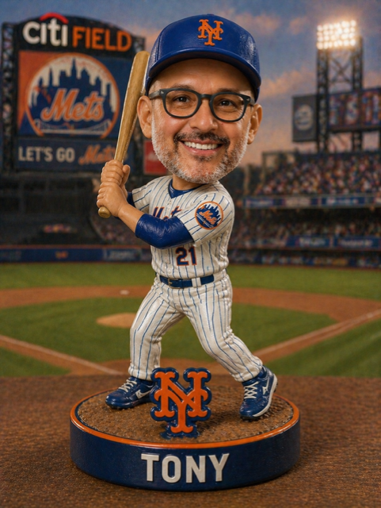

Noticing Before Leading
How attention, empathy, and presence help leaders understand what others may miss.
 Tony Guariglia, PhDThe Educational Alchemist
Tony Guariglia, PhDThe Educational Alchemist

Educational Leader · Author · Public Servant · Systems Builder
Turning ordinary moments into leadership gold.
“Leadership isn’t about changing people. It’s about seeing the gold they already are.”
The philosophy
For more than three decades, Tony Guariglia has worked where education, organizational culture, public service, and human dignity meet. His leadership philosophy is grounded in meliorism: the belief that people and systems can improve through intentional human effort.
He has served as a teacher, principal, assistant administrative director, administrative director, adjunct professor, school board member, workforce development leader, and city councilman. Across those roles, one idea has remained constant: systems matter, but the people inside them matter most.


The book
A reflective leadership book about meliorism, noticing, crisis, culture, continuity, and the quiet moments that shape people long after formal authority ends.
The podcast
Conversations about leadership, culture, education, mental health, civic responsibility, and the ordinary moments that shape extraordinary organizations.
The podcast will extend the ideas in The Educational Alchemist through personal reflections, practical leadership lessons, and conversations with educators, public servants, community leaders, and people whose work helps others rise.
How attention, empathy, and presence help leaders understand what others may miss.
What steady leadership looks like when systems, people, and trust are under pressure.
Building culture, capacity, and continuity that remain after the leader steps away.
Professional journey
Business data processing and computer programming at West Side Career and Technology Center.
Leading people, programs, and culture through daily presence and clear expectations.
Strengthening systems, partnerships, and organizational capacity.
Guiding the Wilkes-Barre Area Career and Technical Center through growth, safety, innovation, and cultural transformation.
Supporting graduate teacher education at Wilkes University.
Applying the same principles of service, clarity, and dignity in civic leadership.
Leadership in action
Tony’s work extends beyond one institution. His record includes school board leadership, workforce development, STEM programming, housing and redevelopment service, parks and recreation, and municipal government.
The common thread is service: listening closely, understanding the system, and making decisions that preserve dignity while moving the work forward.





Beyond the title
The complete picture includes the roles that never appear on a résumé: father, grandfather, mentor, neighbor, and lifelong baseball fan. Those ordinary moments are not separate from leadership. They are where its values are tested and renewed.


Featured project
A practical digital system that combines traditional baseball scorekeeping with live scoring, pitch tracking, game summaries, and downloadable Excel and PDF scorecards.
Open the Scorecard BuilderGuariglia Baseball Scorecard BuilderContact
For speaking, leadership consulting, media, book, podcast, civic, or project inquiries.